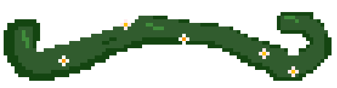

About me
Welcome to my website! My name is Jake, and I LOVE asters! Sunflowers, daisies, echinacea, black-eyed Susan: you name it, I love it! If you couldn't already tell, I'm a big plant person. (Speaking of which, check out the New York Botannical Garden's podcast by the same name. It's sick). I'm also a big fan of the old internet—websites just don't look cool anymore. With that in mind, I tried to design my site to be as fun and organic (get it?) as possible. Hope you enjoy!
<< Back
More about me (i.e. my CV)
Education
-
University of Toronto
Honors Bachelor of Science, Biodiversity & Conservation Biology and Statistics; Expected June 2027
Relevant Coursework: Single and multivariate Calculus, Linear algebra, Computer science (Python and Java), Probability and statistics, Multivariate data analysis (R), Environmental biology, Plant physiology, Conservation biology, Modelling in ecology and evolution, Population ecology, Intro to physical chemistry
Awards
- University of Toronto Excellence Award (March 2026 - Declined)
- Dr. James A. & Connie P. Dickson Scholarship In Science & Mathematics (January, September 2025)
- University of Toronto Scholar (July 2025)
- Alexander T. Fulton Scholarship (March 2025)
- New Jersey State Seal of Biliteracy in Mandarin Chinese (June 2023)
Research experience
-
University of Toronto, Department of Physical and Environmental Science
Center for Global Change Science (CGCS) undergraduate internship, May–August 2026
Advisor: Terrence Bell
-
University of Toronto, Department of Ecology and Evolutionary Biology
Research project in ecology and evolutionary biology, September 2025–April 2026
Advisor: Micah Freedman
Collected mature seed pods from wild plants of the species of interest. Conducted lab tests of seed morphology and settling rate. Designed and implemented a field experiment to measure seed dispersal ability. Gathered citizen science and herbarium records to construct species distribution models. Developed empirical models to estimate long-distance dispersal ability. Assembled results into a manuscript draft.
-
Lamont-Doherty Earth Observatory of Columbia University
Research Experience for Undergraduate (REU) program, May–August 2025
Advisor: Yushu Xia
Designed and implemented a protocol to collect soil moisture samples across a 1-hectare plot of forest. Used Google Earth Engine to compute remote sensing indices from ERA5, MODIS, and Sentinel-2 images. Derived topographical data from a LiDAR digital elevation model using QGIS. Fit regression models to predict soil moisture across space and time. Assembled results into a poster presentation and manuscript draft.
-
University of Toronto, Department of Cell and Systems Biology
Work study program, September 2024–April 2025
Advisors: Qian Lin, Christina Tang
Cultured and administered live feed to zebrafish colonies used in lab experiments. Routinely sanitized fish tanks. Maintained daily records of water quality parameters and fish health. Assisted in the preparation of zebrafish colonies for breeding.
Presentations
- The American Geophysical Union Annual Meeting, New Orleans, LA, December 2025. Cohen, Jake; Xia, Yushu; Duan, Jiaming; Guo, Hancheng. “Investigating the Drivers of Site-Level Forest Soil Moisture Dynamics” (virtual poster presentation).
Leadership experience
-
University of Toronto Ecology and Evolutionary Biology Student Union
Secretary, August 2025–April 2026
Recorded meeting notes and corresponded with union members. Organized events to foster community among the university’s ecology students.
-
Wonder Academy
Tutor, May–August 2024
Designed math and computer science lesson plans and delivered them to middle and high-school students.
Volunteer experience
-
The Nature Conservancy of New Jersey
Field assistant, June 2024
Conducted assessments of local watershed health, including macroinvertebrate surveys, water quality tests, and stream measurements.
Skills
- Computational: Google Earth Engine, Java, JavaScript, Microsoft Office suite, Python, QGIS, R, statistical modelling
- Lab: water quality testing, animal (fish) husbandry, design and analysis of experiments, lab safety
- Field: soil sampling, plant identification
Languages
- English (native; fluent)
- Chinese (Mandarin; limited working proficiency)